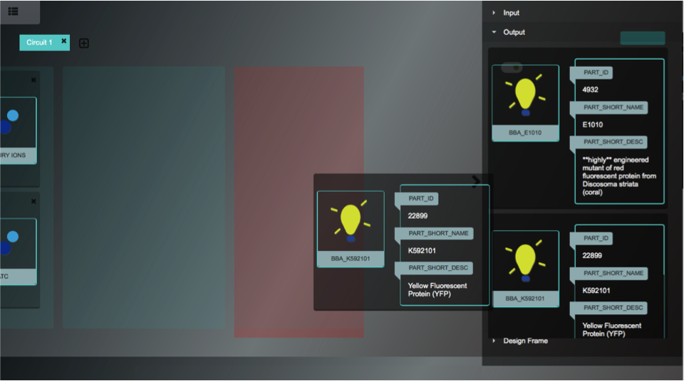

Create a genetic circuit base on your imagination
A. Input Section
1 Click the Button and Open the Material Box
2 Choose Input List
2.1 Click the Icon of the Inputs to Choose Your Input
2.2 Click the Icon of the Promoter to Choose the Pairing Promoter. You can also Search for Any Promoter that You Want.
2.3 Click the Icon of the Receptor to Choose the Pairing Receptor. You can also Search for Any Receptor that You Want.
2.4 Get Your Group of Material and Drag Them to the Canvas
B. Output Section
3 Choose Output List and Drag Your Ideal Output to the Canvas
C. Relationship Section (LOGIC GATE/TRUTH TABLE)
There Are 2 Ways to Choose the Relationship between Inputs and Outputs
a. Logic Gate
4 Choose the Design Frame List, Find Your Logic Relationship and Drag Your Ideal Output to the Canvas
b. Truth Table
5 Click Button if You Want to Connect Relationship by Truth Table
6 Configure the Truth Table as You Want
6a Click "+" or "-" to Manage the Number of Lines of the Truth Table
6b Use Sliders to Represent "Low" or "High"
6c Click Submit and Wait for a Recommendation of Logic Gate
7 Choose a Logic Gate
D. Others
8 Click the "+" Button to Add another Circuit
9 Click Button to Finish the Designation
 Adjust Concentration in Static Graph
Adjust Concentration in Static Graph the Button to Switch to Another Circuit
the Button to Switch to Another Circuit